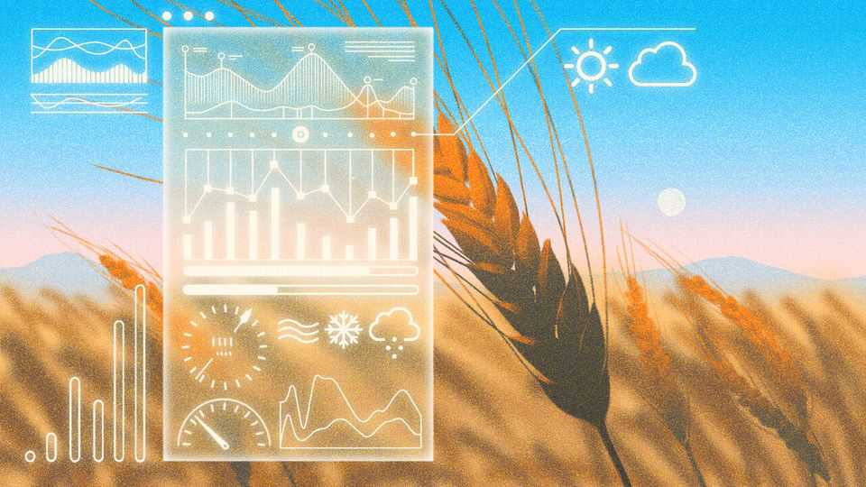

Investment in agricultural tech is growing
Startups are combining AI and genetics to make more food for less money
June 4th 2026

Global investments in agricultural innovation are on the rise. Funds for agritech startups reached $16.2bn in 2025, according to a report by Agfunder, a venture-capital company. Of this, $9bn went to new research into boosting farm yields, up from $2.5bn in 2016.
The boost comes at an opportune moment. Food markets have been beset by volatility in recent years, first as a result of a global pandemic, then a war in Ukraine and now a new war in the Middle East. On top of this, global warming is causing droughts, soil salinisation and increasingly erratic and extreme weather. Yet the fundamentals of food production were last overhauled in the mid-20th century.
Happily, uncertainty can help to drive disruptive technologies. Global investment in agrifood technology spiked in 2021 as a result of the covid-19 pandemic, rising from $22bn in 2019 to a high of $55bn. “Volatility is very bad for people who want to eat, but good for tech adoption,” says Adam Anders, a managing partner of Anterra Capital, a Dutch venture-capital company that specialises in food and agriculture technology.
At F&A Next, a recent gathering of more than 600 ag-tech illuminati and investors including more than 200 startups, held late last month at Wageningen University & Research in the Netherlands, several themes emerged. Innovators are developing pesticides that mimic molecules found in nature, based on a better understanding of how they already protect plants. Inspired by the rise of personalised medicine for people, they are also designing fertilisers, pesticides and other crop aides tailored to individual fields, according to the genetics of the plants and specific environmental conditions.
“The focus around sustainability is shifting from ‘We should take care of our environment’ towards ‘The prices are going to rise sky high because of climate change’,” says Cindy Gerhardt of Planet-B.io, a Dutch industrial biotech accelerator. “It is not about preventing climate change. It’s about dealing with it and finding solutions, because otherwise prices are going to rise too high.”
For some that means boosting yields and reducing losses by developing alternatives to the synthetic pesticides and fertilisers that have dominated since the green revolution of the mid-20th century. B-COS, a spin-out from Ghent University, is genetically engineering bacteria to produce molecules chemically similar to chitin, a compound found in the exoskeletons of insects and fungi cell walls.
Tomato and potato plants sprayed with the molecules are tricked into believing they are under attack and activate their natural defences against pathogens. B-COS is applying this approach to two new products: one to improve growth and drought-tolerance, and another which it claims can reduce disease by 40-50%.
Inevitably, startups are exploring the opportunities presented by artificial intelligence. Many believe it will accelerate disruption in a sector that has historically been slow to reform. “It is going to help farmers connect what’s going on in each square metre of their fields to things like weather forecasts, carbon capture and what consumers want,” says Mr Anders.
The general idea of this kind of “precision agriculture” is to collect a huge amount of data on everything from the environmental conditions of individual fields—moisture, UV levels, temperature and more—to the genetic sequences of the bacteria and pathogens present in the soil, and those of the plants themselves. This is then run through algorithms that make predictions about the best conditions and treatments to extract the highest yield or highest-quality crop.
For example, EVJA, an Italian company, uses field-based sensors to gather data on local environmental conditions. This is fed into an AI model that spits out predictions about the risk of mildew, grey mould and other diseases. The system can also forecast crop yields, water demand and carbon emissions. Davide Parisi, the company’s chief executive, claims its clients have reduced their water and fertiliser use by up to 40% while boosting their yields of leafy greens, tomatoes and potatoes.
Soilytix, a Hamburg-based biotech company, is doing something similar, but underground. It analyses the DNA of microbes present in soil samples and identifies any pathogens. Soilytix then uses this information to send farmers recommendations for which seed varieties they should plant in each plot, and to suggest how to adjust pesticide use to the conditions the plants will grow in. Like EVJA, Soilytix also analyses how much carbon is being sequestered in a plot.
Other startups are applying advanced breeding and digital technologies to produce more nutritious, climate-resilient crops with higher yields. Pádraic Flood, a plant geneticist, has founded Aardaia, a startup based on the Wageningen University & Research campus. The group is domesticating the aardaker, a wild “protein potato” which Dr Flood says has the potential to produce several times more protein per hectare than soyabeans. These days the aardaker, which has a nutty taste somewhere between a potato and a sweet chestnut, is primarily foraged, but in the 18th century it was grown commercially in the Netherlands.
Dr Flood is speed-breeding aardakers in growth chambers: by manipulating the frequency and amount of light that plants are exposed to, as well as temperature and moisture in the chambers, he can grow five generations of plants per year instead of just one. He uses machine learning to match the genetic data of individual plants to their yield, flavour and protein content. From this, he is better able to choose which plants to hybridise in order to produce an optimised aardaker with the perfect combination of yield, taste and nutrition. Dr Flood says he already has varieties that produce tubers with yields around ten times that of wild plants, and hopes to improve on that.
Radicle Crops, another Dutch startup, is taking a similar approach to optimise quinoa—also a high-protein crop but one that has the added advantage of containing all nine essential amino acids the human body needs but cannot make. The company is developing climate-change resilient varieties that are adapted to a variety of environments. It has begun a commercial roll-out of a hybrid variety which it says yields 25-45% more grain than previous varieties and does a better job of competing against weeds.
There is still a long way to go. In 2024, agricultural tech companies attracted just 1.3% of global early-stage venture-capital funding despite agriculture accounting for about 4% of global GDP. High-tech innovations will make their way into developed markets first before trickling into the global south. But if the lab rats have their way, and the funds keep flowing, a new age of precision agriculture is coming. ■
Curious about the world? To enjoy our mind-expanding science coverage, sign up to Simply Science, our weekly subscriber-only newsletter.